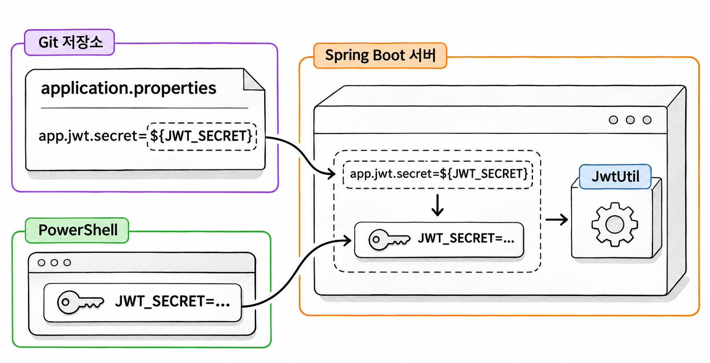

22장. 환경 변수란?
1. 비밀값의 개념
1.1 코드와 설정 파일에 비밀값을 두면 생기는 문제
비밀값(secret)은 남에게 알려지는 순간 서비스가 위험해지는 값입니다. 블로그 API에서는 JWT 서명에 쓰는 비밀키와 데이터베이스 접속 비밀번호가 비밀값입니다. 서명 키를 아는 사람은 아무 회원 번호나 넣은 토큰을 직접 만들 수 있습니다. 서버는 서명만 확인하므로 이 가짜 토큰도 진짜로 믿습니다. DB 비밀번호가 새면 API를 거치지 않고 회원 테이블을 통째로 읽을 수 있습니다.
12장에서는 JwtUtil이 비밀키를 @Value로 설정값에서 받게 했습니다. 코드에서는 키가 빠졌지만, 키 문자열은 아직 application.properties에 적혀 있습니다. 설정 파일은 소스 코드와 함께 Git 저장소에 올라갑니다. 그래서 이 상태에서는 다음 문제가 남습니다.
| 문제 | 블로그 API에서 생기는 일 |
|---|---|
| 저장소에 남는다 | 저장소를 볼 수 있는 사람은 모두 서명 키를 압니다. 파일에서 지워도 Git 기록에는 예전 커밋으로 남습니다. |
| 환경마다 같은 값을 쓴다 | 개발용 키와 운영용 키가 같아서, 개발자 PC에서 만든 토큰이 운영 서버에서도 통합니다. |
| 바꾸려면 다시 빌드한다 | 키가 새어 바꿔야 할 때 파일을 고치고 빌드와 배포를 다시 해야 합니다. |
비밀값을 설정 파일에서 빼면 세 문제가 함께 풀립니다. 설정 파일에는 "이 값은 바깥에서 받는다"는 자리만 남기고, 실제 값은 서버를 실행하는 쪽에서 넣습니다. 이때 값을 넘기는 통로가 환경 변수입니다.
1.2 환경 변수란?
환경 변수(environment variable)는 운영체제가 실행 중인 프로그램에 넘겨주는 이름=값 쌍입니다. 프로그램은 시작할 때 자기를 실행한 쪽(PowerShell, IntelliJ, 나중에는 Docker 컨테이너)에서 환경 변수 목록을 물려받습니다. 자바에서는 System.getenv("이름")으로 읽습니다. Spring Boot는 이 목록을 설정값을 찾는 곳 가운데 하나로 씁니다.
환경 변수는 프로그램 파일 밖에 있습니다. 그래서 코드와 설정 파일은 그대로 두고, 실행하는 곳마다 다른 값을 넣을 수 있습니다. 개발자 PC에는 개발용 키를, 운영 서버에는 운영용 키를 넣는 식입니다. 실제 값이 저장소에 올라가지 않는 것도 이 방식의 장점입니다.

그림 22-1처럼 저장소에는 ${JWT_SECRET}이라는 자리만 올라갑니다. 열쇠에 해당하는 실제 값은 서버를 실행하는 컴퓨터에만 있습니다.
후속 과정에서 Docker로 서버를 AWS에 올릴 때도 같은 방식으로 비밀값을 넣습니다. 컨테이너를 실행하면서 환경 변수를 넘기면 됩니다. 이 장에서 설정 파일을 환경 변수 기준으로 바꿔 두면 배포할 때 코드를 고칠 일이 없습니다.
2. 설정값에서 환경 변수 읽기
2.1 ${이름:기본값} 플레이스홀더
플레이스홀더(placeholder)는 설정값 안에 다른 값이 들어갈 자리를 표시하는 문법입니다. Spring Boot는 서버를 시작할 때 ${이름} 자리를 찾습니다. 그리고 그 이름의 값을 환경 변수, 자바 시스템 속성, 다른 설정 키 같은 곳에서 찾아 바꿔 넣습니다. 이름 뒤에 콜론(:)을 붙이면 값을 찾지 못했을 때 쓸 기본값을 정할 수 있습니다.
기본 문법
설정키=${환경변수이름}
설정키=${환경변수이름:기본값}세 형태는 값을 찾지 못했을 때 다르게 동작합니다.
| 형태 | 값을 찾았을 때 | 값을 찾지 못했을 때 |
|---|---|---|
${JWT_SECRET} | 찾은 값 | 서버가 시작되지 않음 |
${JWT_SECRET:abc} | 찾은 값 | abc |
${JWT_SECRET:} | 찾은 값 | 빈 문자열 |
12장에서 쓴 @Value("${app.jwt.secret}")도 같은 플레이스홀더입니다. @Value는 설정 키 app.jwt.secret을 찾습니다. 설정 파일에 적힌 그 키의 값이 다시 ${JWT_SECRET}이면, 스프링은 한 번 더 환경 변수를 찾습니다. 그래서 JwtUtil 코드는 그대로 두고 설정 파일의 값만 바꾸면 됩니다.
2.2 JWT 비밀키를 환경 변수로 바꾸기
21장에서 나눈 공통 설정 파일에서 서명 키 줄을 플레이스홀더로 바꿉니다. 환경 변수를 넣지 않아도 서버가 뜨도록, 지금까지 쓰던 개발용 키를 기본값으로 둡니다.
예제 22-1 — 서명 키를 환경 변수에서 받기
이어서: 예제 21-4
파일명: src/main/resources/application.properties
server.port=8080
spring.servlet.encoding.charset=UTF-8
spring.servlet.encoding.force=true
spring.profiles.default=dev
spring.jpa.open-in-view=false
app.cors.allowed-origins=http://localhost:5173
app.jwt.secret=${JWT_SECRET:newtenco-blog-jwt-secret-key-must-be-at-least-64-bytes-long-0123456789}
app.jwt.expiration-time=86400000실행 결과
PowerShell에서 환경 변수를 넣지 않고 .\gradlew.bat bootRun으로 실행합니다. 서버는 dev 프로필로 시작됩니다. POST /login으로 ssar이 로그인하면 이전처럼 Authorization 헤더에 토큰이 담겨 옵니다. JWT_SECRET이 없으니 기본값이 쓰였고, 이 값은 지금까지 쓰던 키와 같습니다. 그래서 서버를 다시 켜기 전에 받은 토큰도 그대로 통합니다.
만료 시간 app.jwt.expiration-time은 플레이스홀더로 바꾸지 않았습니다. 만료 시간은 알려져도 위험하지 않으므로 설정 파일에 남겨도 됩니다. 환경 변수로 빼는 값은 비밀값과, 실행 환경마다 달라지는 값으로 한정합니다.
이 예제는 아직 완성이 아닙니다. 키 문자열이 기본값 자리에 남아 있어서 여전히 저장소에 올라갑니다. 기본값을 dev 설정으로 옮기고, 운영에서는 기본값이 없게 하는 작업은 3.3에서 합니다.
2.3 DB 접속 정보를 환경 변수로 바꾸기
dev 프로필은 서버 안에서 만들고 지우는 H2 메모리 DB를 쓰므로 접속 정보를 숨길 이유가 없습니다. 숨겨야 하는 쪽은 21장에서 자리만 만들어 둔 prod 프로필의 DB 접속 정보입니다. 주소, 사용자 이름, 비밀번호를 모두 환경 변수로 받게 바꿉니다.
예제 22-2 — 운영 DB 접속 정보를 환경 변수에서 받기
이어서: 예제 22-1
파일명: src/main/resources/application-prod.properties
spring.datasource.url=${DB_URL}
spring.datasource.username=${DB_USERNAME}
spring.datasource.password=${DB_PASSWORD}
spring.h2.console.enabled=false
spring.jpa.hibernate.ddl-auto=validate
spring.jpa.show-sql=false
app.cors.allowed-origins=https://blog.example.com실행 결과
.\gradlew.bat bootRun으로 실행하면 dev 프로필이 쓰이므로 동작은 예제 22-1과 같습니다. prod 프로필은 3.1에서 세 환경 변수를 넣은 뒤 실행합니다.
세 값에는 기본값을 두지 않았습니다. 운영 DB 정보는 개발자 PC에 기본으로 적어 둘 값이 아니기 때문입니다. 주소도 환경 변수로 받으므로, 후속 과정에서 AWS RDS로 옮길 때 이 파일은 고치지 않습니다. 실행할 때 넣는 DB_URL 값만 바뀝니다.
spring.datasource.driver-class-name은 적지 않았습니다. Spring Boot는 주소가 jdbc:h2:로 시작하면 H2 드라이버를, jdbc:mysql:로 시작하면 MySQL 드라이버를 골라 씁니다. 드라이버까지 적어 두면 DB를 바꿀 때 주소와 드라이버 두 줄을 함께 고쳐야 합니다.
나머지 줄은 21장 예제 21-3과 같습니다. H2 콘솔과 SQL 출력은 끄고, ddl-auto는 21장 3.2에서 정한 대로 validate로 둡니다. CORS 허용 출처도 실제 프런트엔드 주소로 덮어씁니다.
2.4 환경 변수 이름과 설정 키의 연결
설정 키와 환경 변수는 두 가지 방법으로 이어집니다.
첫째는 지금까지 쓴 방법입니다. 설정 파일에 ${JWT_SECRET}처럼 플레이스홀더를 적으면 그 이름의 환경 변수를 찾습니다. 이름은 마음대로 정할 수 있고, 설정 파일만 봐도 어떤 값을 바깥에서 받는지 한눈에 보입니다.
둘째는 Spring Boot가 설정 키를 환경 변수 이름으로 바꿔서 자동으로 찾는 방법입니다. 대부분의 운영체제는 환경 변수 이름에 점(.)을 쓰지 못하게 합니다. 그래서 Spring Boot는 설정 키를 다음 규칙으로 바꾼 이름의 환경 변수도 찾습니다.
- 점(
.)을 밑줄(_)로 바꿉니다. - 하이픈(
-)은 지웁니다. - 모두 대문자로 씁니다.
| 설정 키 | 자동으로 찾는 환경 변수 |
|---|---|
app.jwt.secret | APP_JWT_SECRET |
app.jwt.expiration-time | APP_JWT_EXPIRATIONTIME |
spring.datasource.url | SPRING_DATASOURCE_URL |
spring.jpa.hibernate.ddl-auto | SPRING_JPA_HIBERNATE_DDLAUTO |
Spring Boot가 설정값을 찾는 순서에서 운영체제 환경 변수는 application.properties와 프로필 파일보다 앞섭니다. 그래서 APP_JWT_SECRET을 넣으면 설정 파일에 무엇이 적혀 있든 환경 변수의 값이 쓰입니다. 명령줄 인수 --args="--설정키=값"은 환경 변수보다도 앞섭니다.
@Value에서도 이 규칙이 통하려면 코드에 적는 키가 소문자와 하이픈으로 된 표준 형태여야 합니다. @Value("${app.jwt.expiration-time}")은 APP_JWT_EXPIRATIONTIME을 찾습니다. 반면 @Value("${app.jwt.expirationTime}")처럼 쓰면 app.jwt.expiration-time으로 적은 설정 키를 찾지 못합니다.
이 책은 첫째 방법을 씁니다. 자동 규칙에만 기대면 설정 파일에는 개발용 값이 적혀 있는데 실제로는 바깥 값이 쓰이는 일이 생깁니다. 그러면 어느 값이 쓰였는지 파일만 봐서는 알 수 없습니다. 둘째 방법은 알고만 있으면 됩니다. 누군가 우연히 SPRING_JPA_HIBERNATE_DDLAUTO 같은 환경 변수를 넣어 두었다면, 서버가 설정 파일과 다르게 동작하는 원인이 여기에 있습니다.
3. 환경 변수 넣고 실행하기
3.1 PowerShell에서 $env:로 설정하기
PowerShell에서는 $env:이름에 값을 대입해 환경 변수를 만듭니다. 이렇게 만든 값은 지금 열린 PowerShell 창과, 그 창에서 실행한 프로그램에만 보입니다. 창을 닫으면 사라지고, 다른 창에서는 보이지 않습니다.
기본 문법
$env:이름="값"
$env:이름첫 줄은 값을 넣고, 둘째 줄은 넣은 값을 출력합니다.
운영용 서명 키는 사람이 지어내지 않고 무작위로 만듭니다. HS512 서명 키는 64바이트 이상이어야 합니다. 다음 명령은 무작위 64바이트를 만들어 Base64 문자열로 출력합니다. 출력된 문자열은 88글자입니다.
코드 조각
$bytes = New-Object byte[] 64
[System.Security.Cryptography.RandomNumberGenerator]::Create().GetBytes($bytes)
[Convert]::ToBase64String($bytes)출력된 문자열을 복사해 JWT_SECRET에 넣고, DB 접속 정보 세 개도 넣은 뒤 prod 프로필로 실행합니다. 연습용 운영 DB로는 H2 파일 DB를 씁니다. 데이터는 프로젝트 폴더 아래 db 폴더에 파일로 저장됩니다.
이 파일 DB는 처음에 비어 있어서 테이블이 하나도 없습니다. prod 설정의 ddl-auto=validate는 테이블을 검사만 하므로, 그대로 실행하면 테이블이 없다는 오류로 서버가 멈춥니다. 그래서 이 연습에서만 명령줄 인수로 ddl-auto를 update로 덮어써 Hibernate가 테이블을 만들게 합니다. 2.4에서 본 것처럼 명령줄 인수는 설정 파일과 환경 변수보다 앞섭니다. 한 번 만든 테이블은 파일에 남으므로 다음 실행부터는 이 인수가 없어도 validate를 통과합니다. 실제 운영 DB의 테이블은 SQL로 직접 만들고 관리하므로 이 인수를 넣지 않습니다.
예제 22-3 — 환경 변수를 넣고 prod로 실행하기
이어서: 예제 22-2
파일명: PowerShell 명령
$env:JWT_SECRET="(위 명령으로 만든 88글자 문자열)"
$env:DB_URL="jdbc:h2:file:./db/blog"
$env:DB_USERNAME="sa"
$env:DB_PASSWORD="prod1234"
.\gradlew.bat bootRun --args="--spring.profiles.active=prod --spring.jpa.hibernate.ddl-auto=update"실행 결과
실행 로그에 활성 프로필이 prod로 찍히고, 서버가 오류 없이 시작됩니다.
The following 1 profile is active: "prod"prod에서는 data.sql이 실행되지 않으므로 DB가 비어 있습니다. Postman으로 POST /join을 보내 회원을 하나 만들고, POST /login으로 로그인하면 토큰이 발급됩니다. 이 토큰은 새로 넣은 운영용 키로 서명되어 있습니다.
프로젝트 폴더에는 db/blog.mv.db 파일이 생깁니다. 이 DB는 처음 접속할 때 DB_USERNAME과 DB_PASSWORD로 계정을 만듭니다. 다음에 다른 비밀번호를 넣고 실행하면 접속이 거부됩니다. 실제 DB 파일이 저장소에 올라가지 않도록 .gitignore에 db/를 넣어 둡니다.
키가 정말 바뀌었는지는 dev 서버에서 받은 토큰으로 확인합니다. dev 프로필로 실행해 ssar로 로그인하고, 받은 토큰을 복사해 둡니다. 서버를 끄고 위처럼 prod로 다시 실행합니다. 복사해 둔 토큰을 Authorization 헤더에 실어 POST /api/boards를 보내면 401 응답이 돌아옵니다. 두 서버의 서명 키가 달라서, dev 키로 만든 서명이 prod 키 검증을 통과하지 못하기 때문입니다. 1.1에서 말한 "개발 PC의 토큰이 운영 서버에서 통하는" 문제가 사라졌습니다.
gradlew.bat은 Gradle을 거쳐 서버를 실행합니다. Gradle은 자기를 실행한 PowerShell의 환경 변수를 서버 프로세스에 그대로 넘깁니다. 환경 변수를 넣기 전에 띄운 서버가 있다면 끄고 다시 실행해야 새 값이 들어갑니다. 프로그램은 시작할 때 환경 변수를 한 번 물려받을 뿐, 그 뒤에 바뀐 값은 보지 못합니다.
3.2 IntelliJ 실행 설정에 환경 변수 넣기
IntelliJ의 실행 버튼으로 서버를 띄우면 PowerShell 창에서 넣은 $env: 값이 전달되지 않습니다. IntelliJ가 서버를 직접 실행하기 때문입니다. 이때는 실행 설정에 환경 변수를 넣습니다.
- Run > Edit Configurations...를 엽니다.
- 왼쪽 목록에서
BlogApplication을 고릅니다. - 21장에서 쓴 Program arguments 칸에
--spring.profiles.active=prod를 적습니다. Ultimate의 Spring Boot 실행 설정이라면 Active profiles 칸에prod만 적어도 됩니다. - Environment variables 칸이 보이지 않으면 Modify options를 눌러 Environment variables를 켭니다.
- Environment variables 칸에
이름=값을 세미콜론(;)으로 이어 적습니다. - OK를 누르고 실행합니다.
코드 조각
JWT_SECRET=(만든 88글자 문자열);DB_URL=jdbc:h2:file:./db/blog;DB_USERNAME=sa;DB_PASSWORD=prod1234칸 오른쪽 아이콘을 누르면 표 모양 창이 열립니다. 이 창에서 이름과 값을 한 줄씩 넣어도 됩니다.
IntelliJ의 Run/Debug Configurations 창에서 BlogApplication을 고른 화면
아직 그림이 없습니다
실행 설정은 기본으로 프로젝트 .idea 폴더 안의 개인 작업 파일에 저장되므로 Git으로 공유되지 않습니다. 실행 설정 창에서 Store as project file을 켜면 공유용 파일로 저장됩니다. 비밀값을 넣은 실행 설정에서는 이 옵션을 켜지 않습니다.
3.3 비밀값이 없을 때 실행을 멈추게 하기
예제 22-1의 공통 설정에는 아직 개발용 키가 기본값으로 들어 있습니다. 이 상태에서 JWT_SECRET을 빠뜨리고 prod를 실행하면 어떻게 될까요? 서버는 아무 경고 없이, 저장소에 공개된 개발용 키로 토큰을 서명합니다. 비밀값이 빠졌다면 서버가 아예 시작되지 않는 편이 안전합니다.
그래서 공통 설정에서는 기본값을 지우고, 개발용 키는 dev 설정에만 기본값으로 둡니다. 프로필 파일의 값은 공통 파일의 같은 키보다 앞서므로, dev로 실행하면 dev 파일의 줄이 쓰입니다.
예제 22-4 — prod에서 서명 키가 없으면 멈추기
이어서: 예제 22-3
파일명: src/main/resources/application.properties
server.port=8080
spring.servlet.encoding.charset=UTF-8
spring.servlet.encoding.force=true
spring.profiles.default=dev
spring.jpa.open-in-view=false
app.cors.allowed-origins=http://localhost:5173
app.jwt.secret=${JWT_SECRET}
app.jwt.expiration-time=86400000파일명: src/main/resources/application-dev.properties
spring.datasource.driver-class-name=org.h2.Driver
spring.datasource.url=jdbc:h2:mem:test
spring.datasource.username=sa
spring.datasource.password=
spring.h2.console.enabled=true
spring.jpa.hibernate.ddl-auto=create
spring.jpa.show-sql=true
spring.jpa.properties.hibernate.format_sql=true
spring.sql.init.data-locations=classpath:db/data.sql
spring.jpa.defer-datasource-initialization=true
app.jwt.secret=${JWT_SECRET:newtenco-blog-jwt-secret-key-must-be-at-least-64-bytes-long-0123456789}실행 결과
새 PowerShell 창을 엽니다. 환경 변수 없이 .\gradlew.bat bootRun으로 실행하면 dev 프로필이 쓰입니다. dev 파일의 기본값 덕분에 서버는 이전처럼 시작됩니다.
같은 창에서 DB 환경 변수 세 개만 넣고, JWT_SECRET은 빼고 prod로 실행합니다.
$env:DB_URL="jdbc:h2:file:./db/blog"
$env:DB_USERNAME="sa"
$env:DB_PASSWORD="prod1234"
.\gradlew.bat bootRun --args="--spring.profiles.active=prod"서버가 시작되다가 멈춥니다. 오류 로그에서 다음 문장을 찾을 수 있습니다.
Could not resolve placeholder 'JWT_SECRET'JWT_SECRET을 넣고 다시 실행하면 서버가 정상으로 시작됩니다.
오류 문장은 "JWT_SECRET 자리에 넣을 값을 어디서도 찾지 못했다"는 뜻입니다. 스프링은 JwtUtil 빈을 만들면서 @Value("${app.jwt.secret}")의 값을 찾습니다. prod 파일에는 이 키를 덮어쓰는 줄이 없으므로 공통 파일의 ${JWT_SECRET}이 쓰입니다. 그런데 기본값이 없으니 스프링은 빈을 만들지 못합니다. 2장에서 본 것처럼 빈 하나를 만들지 못하면 애플리케이션 전체가 시작되지 않습니다.
빠진 값을 시작 단계에서 잡으면 잘못된 서버가 요청을 받기 전에 멈춥니다. 무엇이 빠졌는지도 로그 한 줄로 알 수 있습니다. 반대로 개발용 키로 조용히 동작하는 서버는 문제를 알아채기 어렵습니다. DB 환경 변수 세 개도 기본값이 없으므로, 하나라도 빠지면 같은 방식으로 멈춥니다.
이제 저장소에 남은 키는 dev 파일의 개발용 키뿐입니다. 이 키는 공개되어도 되는 학습용 값이고, prod에서는 절대 쓰이지 않습니다. 단, 21장에서 기본 프로필을 dev로 정했으므로, 운영 서버를 띄울 때 --spring.profiles.active=prod를 빠뜨리면 dev 설정과 개발용 키로 실행됩니다. 운영에서는 활성 프로필도 서명 키처럼 반드시 넣어야 하는 값으로 다룹니다.
| 실행 | JWT_SECRET 있음 | JWT_SECRET 없음 |
|---|---|---|
| dev | 넣은 값 | dev 파일의 개발용 키 |
| prod | 넣은 값 | 서버가 시작되지 않음 |